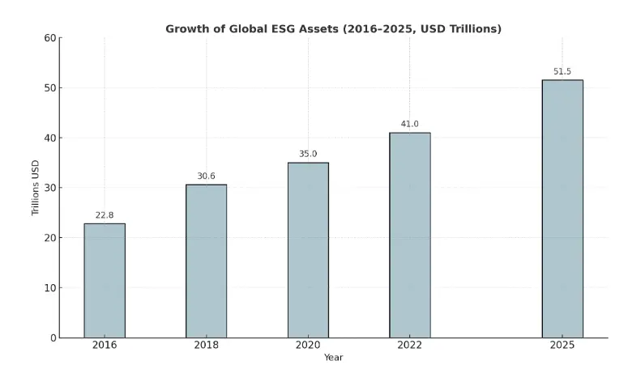

Today's economic landscape requires stakeholders, especially investors, to evaluate businesses based on environmental, social, and governance (ESG) performance. Companies need to adopt ESG reporting standards because sustainability claims and moral business practices undergo increased scrutiny, affecting their ability to gain investor trust and maintain market success. ESG considerations are no longer optional. They are imperative from a strategic standpoint.
The Rise of ESG Reporting
Investors have been paying more attention to a company's ESG performance in addition to its financial statements, in recent years. Investors want to know how companies handle their governance structures, human resources, and vulnerability to climate hazards.
Investors refer to standardized frameworks such as the Global ESG Disclosure Standards for Investment Products, the European Sustainability Reporting Standards (ESRS), and the Global Reporting Initiative (GRI) Standards that provide structured guidance and consistency. Comprehensive reporting on sustainability initiatives enables organizations to demonstrate their performance, fostering investor confidence and enhancing market credibility.
Uniform ESG reporting enables investors to choose more informed investment options by eliminating inconsistent data and revealing how businesses address long-term threats and opportunities. However, navigating this evolving landscape requires both strategic clarity and technical expertise.
Meeting ESG Disclosure Requirements
The global implementation of regulatory standards across nations requires organizations to follow ESG disclosure requirements. The European Union's Corporate Sustainability Reporting Directive ( CSRD ) and India's Business Responsibility and Sustainability Reporting (BRSR), alongside forthcoming climate disclosure requirements by the SEC in the United States, force organizations to present complete ESG disclosures. European companies must prioritize CSRD compliance to avoid penalties and meet growing investor expectations. Businesses align with the ESRS framework to ensure consistency in disclosures and strengthen credibility among EU investors.
To effectively meet these evolving compliance requirements, organizations increasingly seek support from consulting firms that act as experienced sustainability advisors. These firms provide specialized guidance on aligning with frameworks such as the GRI Standards and ESRS, enabling clients to navigate complex reporting obligations. Additionally, many organizations are adopting dedicated ESG reporting tools to streamline data collection, automate compliance tracking, and minimize manual effort, ensuring consistency, transparency, and regulatory alignment.
Building Investor Trust
Modern investors evaluate investment opportunities through a comprehensive framework that goes beyond financial metrics to include various additional criteria. The evaluation process of these investors focuses on corporate self-governance and employee welfare, and the management of environmental and community impacts. The current business environment recognizes the significance of reliable ESG data as a fundamental indicator of company sustainability.
Bloomberg research forecasts that global ESG assets will exceed $50 trillion by 2025.

Transparent ESG reporting allows investors to:
- Assess non-financial risks and opportunities
- Compare performance across peers and industries
- Gain faith in a company's beliefs and vision
Through detailed ESG reporting, companies can:
- Highlight social impact and community participation
- Showcase risk management and climate readiness
- Showcase ethical governance practices
- Enhance stakeholder communication and reputation
Investor Insights: Leveraging ESG Data for Smarter Decisions
Investors increasingly rely on ESG data to make informed, future-ready investment decisions. Investors are shifting toward ESG investment strategies that align financial performance with measurable social and environmental outcomes. Reliable ESG performance data helps investors evaluate risk, compare companies, and make evidence-based capital allocations. Instead of treating ESG as a secondary screen, major asset managers now integrate ESG considerations into the core of portfolio strategy.
- Risk Assessment and Mitigation: To detect long-term operational and reputational risks, investors employ ESG indicators. Climate-related hazards, such as carbon-intensive operations or water scarcity, for instance, may indicate future expenses or regulatory challenges. Businesses like Vanguard and BlackRock use ESG score models to inform their investment decisions and make additional adjustments to their investment weights.
- Thematic and Impact Investing: Institutional investors direct capital into ESG-focused funds that prioritize areas like the circular economy, gender equity, and renewable energy. This means that the funds evaluate companies on targeted ESG performance indicators, allowing investors to align their returns with impact.
- Engagement and Stewardship: Instead of immediate divestment from low-performing companies, many investors use 'engagement.' They utilize ESG data to communicate with company leadership, supporting enhanced governance, improved diversity, emissions reduction, and disclosure practices. Pension funds and sovereign wealth funds commonly favor this approach.
- Integration into Valuation Models: ESG factors are gaining prominence in valuation frameworks, reflecting their rising impact on financial performance and risk, whereby analysts at Morgan Stanley and Goldman Sachs consider how and to what extent ESG factors impact companies' cost of capital, brand equity, and regulatory resilience, all of which affect risk premiums and expectations for long-term growth.
- Peer comparisons and benchmarking: Investors can compare businesses from different industries and regions thanks to standardized ESG disclosures. Third-party ESG ratings from organizations such as MSCI, Sustainalytics, and ISS ESG offer information that affects capital allocation, analyst recommendations, and fund inclusion.
Fueling Business Growth Through ESG Integration
Beyond ensuring compliance and fostering trust, ESG reporting drives strategic expansion. Strong ESG disclosures frequently result in:
- Better operational efficiencies
- Lower borrowing costs
- Greater access to financing
- Improved recruitment and retention of talent
Additionally, ESG criteria are being increasingly incorporated into valuation models by investors. Strong and transparent reporting has a direct impact on a business's competitiveness and value. Proper ESG integration doesn't just ensure compliance - it fuels sustainable business growth by enhancing operational and brand value.
Building Trust Through ESG
From Coal to Clean: Ørsted's ESG Journey and Funding Success
Ørsted can be cited as one powerful example that shows how ESG reporting builds investor confidence and directly bolsters financial performance.
Ørsted, a Danish energy company, underwent a transformation that has made it one of the largest coal-intensive power utilities in Europe and a global leader in offshore wind power. The pivot centered on transparent, standards-based ESG reporting following GRI, CDP, and SASB frameworks.
Key ESG-Driven Outcomes:
- Improved Investor Sentiment: By consistently disclosing ESG performance metrics and long-term sustainability goals, Ørsted has attracted ESG-aligned investors. The story of its transformation and its transparent reporting are reasons why they have been awarded MSCI (AAA) and Sustainalytics (low-risk) ratings.
- Bond Success: By issuing several green bonds, Ørsted raised billions of dollars to finance its renewable energy projects. The trust created through credible ESG disclosures held the key to winning favorable terms and keen investor interest.
- Valuation Growth: Between 2017 and 2022, Ørsted's market capitalization increased more than twofold due to higher confidence from global investors who rank highly on ESG metrics. Increased holdings by big-ticket investors, including BlackRock and Norges Bank, further strengthened the rally.
- Recognition and Inclusion: The company has been consistently picked as the most sustainable energy company globally by the Global 100 Index and included in many ESG investment funds.
This transformation of Ørsted showcases visibility in line with global ESG standards, which can unlock capital and attract purpose-driven investors who can unleash further possibilities to realize long-term business growth.
From Reporting to Results: Schneider Electric's ESG Success
The benefits of integrating ESG into business strategy are more than just theoretical; several leading companies have achieved measurable growth through this approach. A notable example is Schneider Electric:
- Embedded sustainability goals into its core business operations, enhancing long-term strategic focus.
- Leveraged digital innovation and energy efficiency to achieve measurable gains in performance and cost savings.
- Attracted mission-driven investors by issuing green bonds and sustainability-linked financial instruments.
- Strengthened its brand by aligning with global reporting frameworks, increasing transparency, and credibility.
- Cultivated a value-driven workplace culture, helping attract and retain top talent in competitive markets.
- Positioned itself as a market leader by turning ESG priorities into clear business outcomes and innovation drivers.
The Way Forward
ESG reporting will become increasingly significant as stakeholder expectations and regulatory scrutiny intensify. Businesses will be better positioned to gain trust, obtain funding, and take the lead in a purpose-driven economy if they take immediate action to develop strategic, credible ESG disclosures.
In the future, sustainability statements will need to be supported by actual, verifiable facts, as indicated by the emergence of the Global ESG Disclosure Standards for Investment Products. Companies that make early investments in developing robust ESG reporting systems will be in a better position to meet investor demands, mitigate risks, and access long-term funding sources.
Conclusion: ESG Reporting as a Strategic Imperative
ESG reporting is essential for both competitive advantage and compliance. Businesses can establish long-lasting trust and enable sustainable growth by adopting transparent, consistent, and investor-aligned ESG disclosures.
Partnering with a trusted advisor like ecoPRISM ensures this journey is both compliant and value-driven. Whether you're starting your ESG journey or looking to refine your reporting, ecoPRISM is here to help you build trust, meet investor expectations, and grow sustainably.